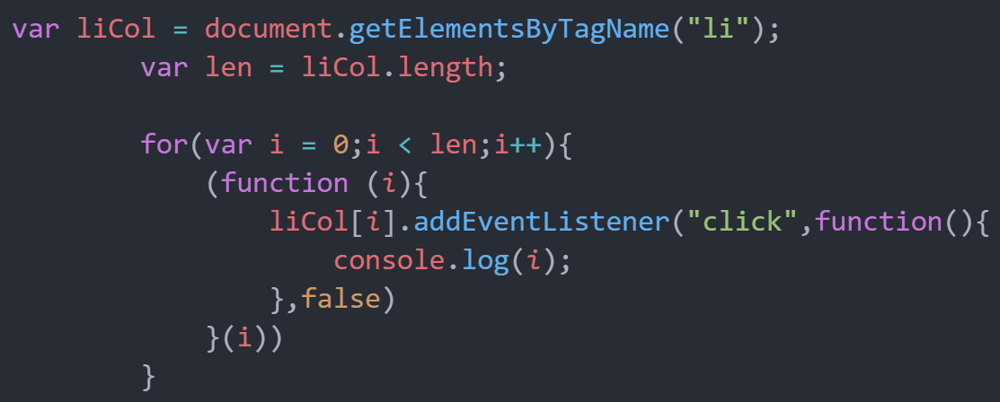
说白了就是一个动作，与用户实现交互功能，你动一下，他会给你一个反馈
div.onclick = function(){}
div.onclick就是一个事件，后面的函数是响应
重要吗？ — 交互体验的核心功能
ele.onxxx = function (event) {}
兼容性很好，但是一个元素只能绑定一个处理程序
基本等同于写在HTML行间上(onclick作为属性写在内联样式表里，，这种绑定方式叫做句柄的绑定方式)
ele.addEventListener(type, fn, false);
IE9以下不兼容，可以为一个事件绑定多个处理程序，触发之后会按照绑定顺序依次触发
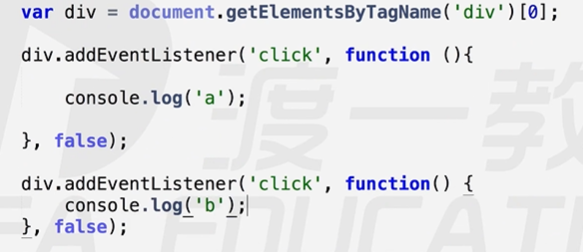
如果同一个函数绑定多次，那么只执行一次
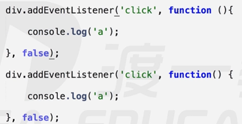
这两个函数长得一样，但是位置不同，所以输出a a
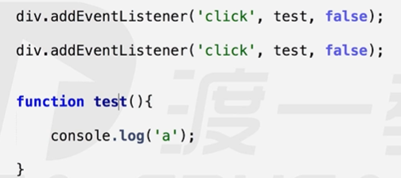
同一个函数，绑定多次，只执行一次，输出a
type：事件类型，点击样式直接写click
fn：处理函数
ele.attachEvent(‘on’ + type, fn);
IE独有，一个事件同样可以绑定多个处理程序，但是如果同一个函数绑定多次，它也会执行多次
type：事件类型
fn： 处理函数
ele.onxxx = function (event) {}
obj.addEventListener(type, fn, false);
obj.attachEvent(‘on’ + type, fn);
封装兼容性的 addEvent(elem, type, handle)方法
事件处理函数handle写在外面，使this指向elem而不是指向window
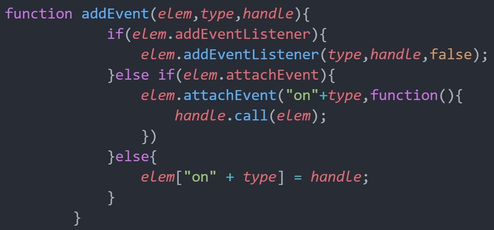
ele.onclick = false/“”/null;
ele.removeEventListener(type, fn, false);
ele.detachEvent(‘on’ + type, fn);
注:若绑定匿名函数，则无法解除。
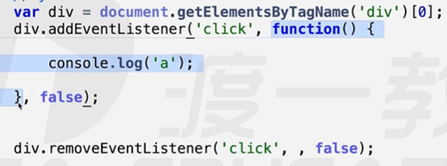
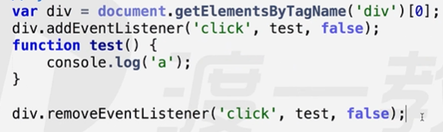
事件冒泡：
事件捕获：
结构上（非视觉上）嵌套关系的元素，会存在事件捕获的功能，即同一事件，自父元素捕获至子元素（事件源元素）。（自顶向下）
IE没有捕获事件
开启方式：obj.addEventListener(type, fn, true);
其他事件捕获方式（IE特有）：elem.setCapture();HTML元素硬是任何地方发生的任何事件捕获到自己身上来，这就解决的物体拖拽时因为鼠标移动过快，而物体跟不上鼠标的过程，这种方法对其他元素是有害处的，其他元素的方法会不好使，所以使用完之后要用elem.releaseCapture();释放，这是一个过时的问题，但是面试官可能会问，不用会操作，知道就行，
触发顺序：先捕获，后冒泡
一个对象的一个事件类型上面绑定着一个处理函数只能遵循一个处理模型
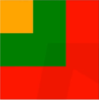
点击黄色区域：

解析： 先捕获，后冒泡
点击黄色区域：

解析： 红色捕获，绿色捕获，黄色执行，黄色执行，绿色冒泡，红色冒泡，黄色执行的顺序应该符合谁先绑定谁先执行
focus，blur，change，submit，reset，select 等事件不冒泡
取消冒泡：
W3C标准 event.stopPropagation();但不支持ie9以下版本
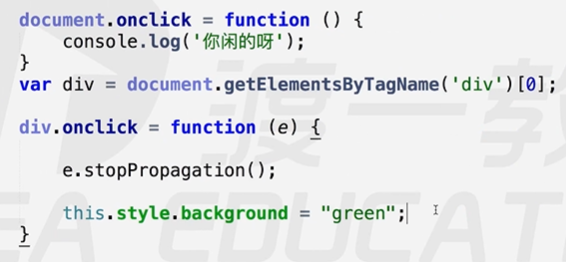
IE谷歌：event.cancelBubble = true;
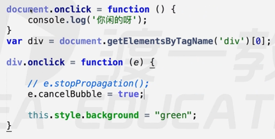
封装取消冒泡的函数 stopBubble(event)
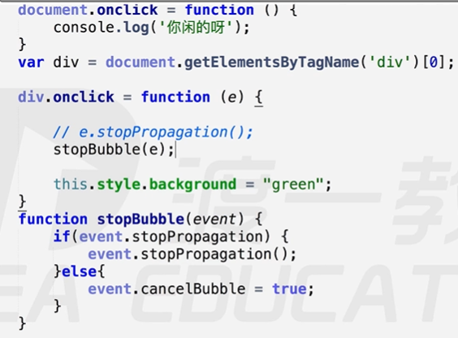
默认事件：表单提交，a标签跳转，右键菜单等
return false; 以对象属性的方式注册的事件才生效
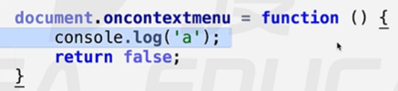
点击右键，只在控制台输出a但是不弹出菜单
event.preventDefault(); W3C标注，IE9以下不兼容
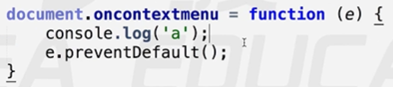
event.returnValue = false; 兼容IE
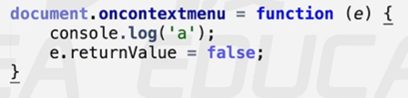
封装阻止默认事件的函数 cancelHandler(event);
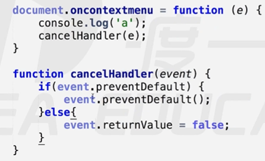
e （非IE）|| window.event （用于IE）
事件源（源头）对象:
event.target 火狐独有的
event.srcElement IE独有的
这俩chrome都有
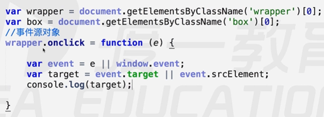
用处：事件委托
兼容性写法
利用事件冒泡，和事件源对象进行处理
优点：
性能 不需要循环所有的元素一个个绑定事件
灵活 当有新的子元素时不需要重新绑定事件
例题：
鼠标事件
click、mousedown、mouseup，mouseover、mouseout，mouseenter mouseleave，mousemove、contextmenu、
click、mousedown、mouseup(click = mousedown + mouseup)和绑定顺序没关系，和触发先后顺序有关
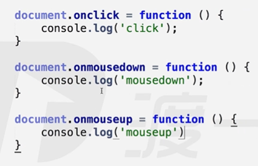
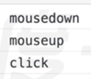
mouseover鼠标覆盖是发生什么事，mouseout鼠标离开时发生什么事，实际上CSS中hover就是用JS写的
mouseenter、mouseleave HTML5新规范，效果与上面的相同
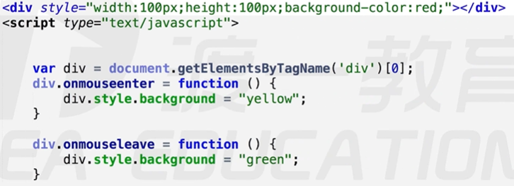
能区分鼠标左右键的只有mousedown、mouseup，用事件对象的button属性来区分鼠标的按键，0/1/2 –> 左键/滚动论/右键
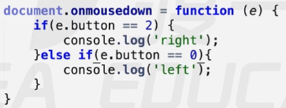
DOM3标准规定:click事件只能监听左键,只能通过mousedown 和 mouseup来判断鼠标键
如何解决mousedown和click的冲突
键盘事件
keydown keyup keypress
keydown > keypress > keyup
keydown和keypress的区别
keydown可以响应任意键盘按键，keypress只可以相应字符类键盘按键(ASCII码表里面有的都是字符类按键,fn不在ASCII码表里，所以是辅助按键)
keypress返回ASCII码，可以转换成相应字符
文本类事件
input：只要文本有变化就会触发
change：监听聚焦和失去焦点两个状态，如果两个状态前后没变化则不触发，否则触发
focus：聚焦时状态
blur：失去焦点时的状态
窗体操作类(window上的事件)
scroll：滚动条滚动，事件触发
load：没意义且最慢，当页面的解析加载等全部操作做完之后，只等待交互体验时才触发
小练习:fixed定位 js兼容版（IE6没有fixed定位）
习题1：
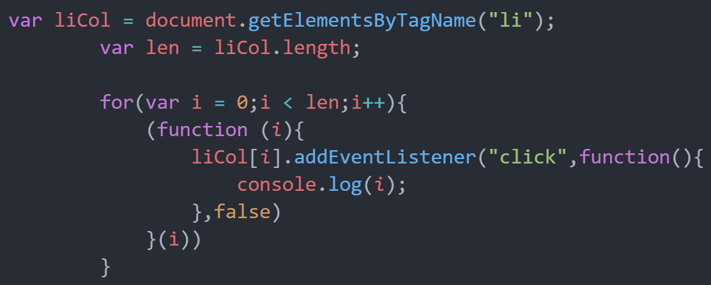
习题2： 拖拽应用
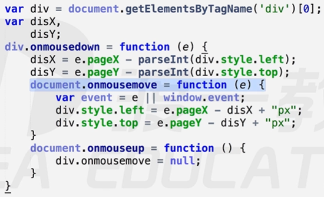
这种方法很粗糙，要求用addEventListener绑定事件，并且将所有代码封装到一个函数drg(elem)里去